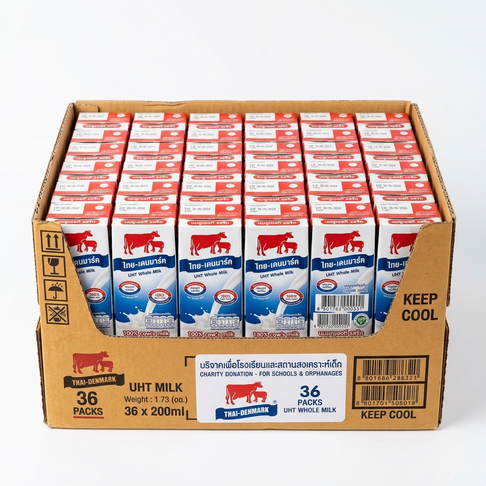
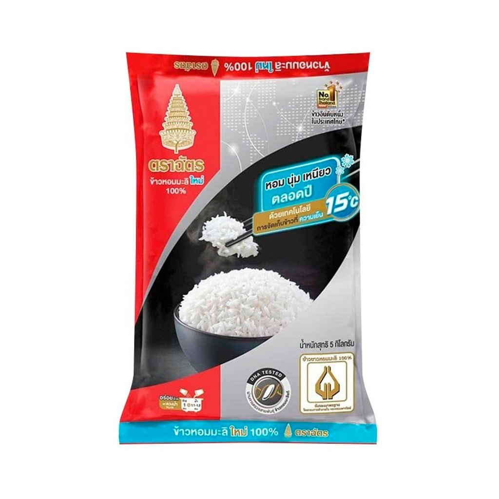

สวดมนต์แล้ว ร่วมส่งต่อบุญสู่ รพ. & มูลนิธิ
สร้างมหากุศลส่งต่อความช่วยเหลือแก่ผู้ป่วยอนาถา เด็กกำพร้า และคนชรา จัดส่งของจำเป็นยกลังตรงจาก 7-Eleven ALL Online ถึงบ้านหรือมูลนิธิ


ชุดบทสวดมนต์วันพระ สำหรับไหว้พระที่บ้าน
รวมบทขอขมาพระรัตนตรัย สมาทานศีล 5 อิติปิโส และเจ็ดตำนาน สวดสร้างบุญบารมีในวันพระ

๑. บูชาพระรัตนตรัย และกราบพระ
อิมินา สักกาเรนะ พุทธัง อภิปูชะยามิ
อิมินา สักกาเรนะ ธัมมัง อภิปูชะยามิ
อิมินา สักกาเรนะ สังฆัง อภิปูชะยามิ
อะระหัง สัมมาสัมพุทโธ ภะคะวา, พุทธัง ภะคะวันตัง อะภิวาเทมิ (กราบ)
สวากขาโต ภะคะวะตา ธัมโม, ธัมมัง นะมัสสามิ (กราบ)
สุปะฏิปันโน ภะคะวะโต สาวะกะสังโฆ, สังฆัง นะมามิ (กราบ)
๒. นมัสการพระพุทธเจ้า (นะโม 3 จบ)
นะโม ตัสสะ ภะคะวะโต อะระหะโต สัมมาสัมพุทธัสสะ (3 จบ)
๓. บทสมาทานศีล ๕ (ตั้งใจรักษาศีล)
๑. ปาณาติปาตา เวระมะณี สิกขาปะทัง สะมาทิยามิ (เว้นจากการฆ่าสัตว์)
๒. อะทินนาทานา เวระมะณี สิกขาปะทัง สะมาทิยามิ (เว้นจากการลักทรัพย์)
๓. กาเมสุ มิจฉาจารา เวระมะณี สิกขาปะทัง สะมาทิยามิ (เว้นจากการประพฤติผิดในกาม)
๔. มุสาวาทา เวระมะณี สิกขาปะทัง สะมาทิยามิ (เว้นจากการพูดปด)
๕. สุราเมระยะมัชชะปะมาทัฏฐานา เวระมะณี สิกขาปะทัง สะมาทิยามิ (เว้นจากการดื่มสุราของมึนเมา)
๔. สรรเสริญพระรัตนตรัย (อิติปิโส ภะคะวา)
อิติปิ โส ภะคะวา อะระหัง สัมมาสัมพุทโธ, วิชชาจะระณะสัมปันโน สุขะโต โลกะวิทู,
อะนุตตะโร ปุริสะทัมมะสาระถิ สัตถา เทวะมะนุสสานัง พุทโธ ภะคะวาติฯ
สวากขาโต ภะคะวะตา ธัมโม...
สุปะฏิปันโน ภะคะวะโต สาวะกะสังโฆ...
๕. แผ่เมตตาและอุทิศส่วนกุศลวันพระ
อิทัง เม ญาตีนัง โหนตุ สุขิตา โหนตุ ญาตะโย
ขอผลบุญนี้ จงสำเร็จแก่ญาติทั้งหลายของข้าพเจ้า ขอให้ญาติทั้งหลายจงมีความสุข
สัพเพ สัตตา สุขิตา โหนตุ... (แผ่เมตตาให้สรรพสัตว์และเจ้ากรรมนายเวร)
บทสวดมนต์วันพระ ไหว้พระที่บ้าน เสริมบุญใหญ่ รักษาศีล 5: ความสำคัญ อานิสงส์ และเคล็ดลับการสวดบูชาให้สัมฤทธิ์ผล
"บทสวดมนต์วันพระ ไหว้พระที่บ้าน เสริมบุญใหญ่ รักษาศีล 5" ถือเป็นหนึ่งในบทสวดมนต์อันทรงคุณค่าที่พุทธศาสนิกชนและผู้มีจิตศรัทธายึดถือปฏิบัติสืบทอดกันมายาวนาน จัดอยู่ในหมวด ชุดสวดมนต์ประจำวัน ซึ่งมีพุทธคุณและความศักดิ์สิทธิ์โดดเด่นในด้าน 🌕 วันพระ วันอุโบสถ เสริมบุญใหญ่ มีอานุภาพช่วยชุดบทสวดมนต์วันพระสำหรับไหว้พระที่บ้าน สวดง่าย ครบถ้วน ตั้งแต่บทสมาทานศีล 5 บูชาพระรัตนตรัย อิติปิโส ชินบัญชร ยอดพระกัณฑ์ไตรปิฎก และแผ่เมตตาอุทิศกุศล
1. อานิสงส์และพุทธคุณสำคัญของการเจริญพระพุทธมนต์บทนี้
การสวดสาธยาย บทสวดมนต์วันพระ ไหว้พระที่บ้าน เสริมบุญใหญ่ รักษาศีล 5 อย่างมีสติและสมาธิเป็นประจำ ย่อมนำมาซึ่งคุณประโยชน์ทั้งในทางโลกและทางธรรม ดังนี้:
- เสริมสิริมงคลและพลังจิตใจ: กระแสเสียงและอักขระมนต์โบราณช่วยกล่อมเกลาจิตใจให้สงบ ผ่อนคลายจากความเครียด และเติมพลังบวกในการดำเนินชีวิตประจำวัน
- เกราะป้องกันภัยและเมตตามหานิยม: แรงอธิษฐานและพุทธานุภาพช่วยหนุนนำดวงชะตา แคล้วคลาดปลอดภัยจากอุปสรรค ภยันตราย และดึงดูดผู้คนที่มีความเมตตาปรารถนาดี
- ความคล่องตัวในหน้าที่การงานและการเงิน: การตั้งจิตมั่นขณะสวดมนต์ช่วยเปิดปัญญา ความรอบคอบ และสร้างพลังดึงดูดโชคลาภโอกาสดีๆ เข้ามาสู่ตนเองและครอบครัว
2. เคล็ดลับและวิธีปฏิบัติเพื่อให้การสวดมนต์เกิดผลสูงสุด
เพื่อให้การสวดมนต์บทนี้สัมฤทธิ์ผลตามความปรารถนา ครูบาอาจารย์แนะนำให้ปฏิบัติตามหลัก 3 ประการ:
- ชำระกายและใจให้สะอาด: ล้างหน้า บ้วนปาก หรืออาบน้ำให้สดชื่น แต่งกายสุภาพ นั่งในท่าที่สบายและผ่อนคลาย
- ตั้งนะโม 3 จบ น้อมจิตถึงพระรัตนตรัย: เปล่งเสียงด้วยความเคารพนอบน้อม มีสติรู้ชัดในทุกถ้อยคำ ไม่สวดรีบร้อนหรือเร่งเร้าจนใจขาดความสงบ
- อุทิศบุญและแผ่เมตตาทุกครั้ง: หลังสวดมนต์จบลง ให้แผ่เมตตาแก่ตนเอง ครอบครัว เจ้ากรรมนายเวร และสรรพสัตว์ทั้งหลาย เพื่อเป็นการกระจายกระแสบุญบารมีให้กว้างไกล